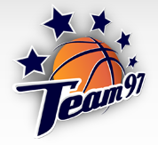

Tai pirmoji ir vienintelė Lietuvoje tarptautinė krepšinio stovykla skirta vaikams nuo 9 iki 17 metų, kurioje treniruotės vedamos anglų, kalba.
Šią prestižinę stovyklą jau yra aplankę virš 2000 vaikų iš 25 pasaulio šalių.
Kodėl verta rinktis “TEAM97 CAMP”?
Tai didžiausią patirtį turintys stovyklų organizatoriai Lietuvoje;
Čia kasmet dirba geriausi treneriai iš Lietuvos, Serbijos, Ispanijos, Vokietijos bei Graikijos t.y. iš tų šalių, kurios jau ilgus metus diktuoja madas krepšinio pasaulyje.;
Krepšinio treniruotes veda patyrę Lietuvos krepšinio treneriai – Darius Sirtautas, Tomas Keršis, Rolandas Rakutis bei svečiai iš užsienio;
Nidoje kasmet susirenka per 200 perspektyviausių vaikų iš įvairių pasaulio šalių;
Mes bendradarbiaujame su su elitine Ispanijos jaunimo krepšinio stovykla „Elite Jove“, kurioje užaugo dabartinės Ispanijos žvaigždės: Ricky Rubio, Pau ir Marcas Gasoliai, Sergi Vidalis, Sergio Llullas;
Geriausiai pasirodžiusiems stovyklos dalyviams yra suteikiama galimybė stažuotis žinomuose Europos krepšinio klubuose.
Stovykloje ypatingas dėmesys skiriamas treniruočių programoms, naujausioms treniruočių metodikoms ir jų tobulinamui, reikalinga ir itin aukštus reikalavimus atitinkanti sporto bazė;
Nidoje esanti ir tarptautinius standartus atitinkanti sporto bazė idealiai tinka didelio užimtumo ir intensyvumo krepšinio treniruotėms lauke bei salėje;
Jaunieji krepšinio talentai Nidoje gauna neįkainojamos patirties ir įgūdžių. Todėl nieko keisto, kad jau ne vienas buvęs auklėtinis iškovojo Europos ir Pasaulio čempionatų, Universiados medalius arba pasirašė sutartis su profesionalių Europos klubų komandomis.